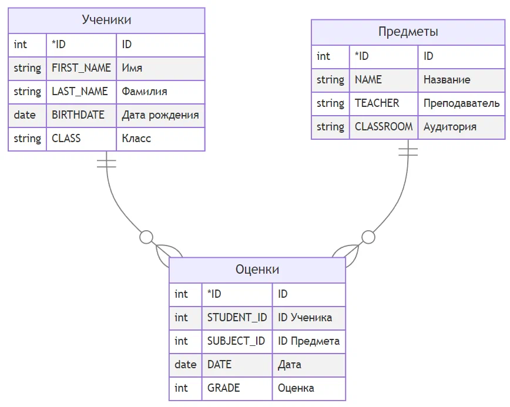

Урок 10. Введение в базы данных (MS Access)
Базы данных (БД) окружают нас повсюду: от телефонной книжки в смартфоне до огромных хранилищ информации в интернет-магазинах. Они позволяют эффективно хранить, искать и обрабатывать структурированные данные. В этом уроке мы познакомимся с основами теории реляционных баз данных и научимся проектировать простые базы данных в среде MS Access.
1. Основные понятия
База данных (БД) — это организованная совокупность данных, предназначенная для длительного хранения во внешней памяти компьютера и постоянного использования. Для создания и управления БД используются специальные программы — системы управления базами данных (СУБД). Примеры СУБД: MS Access, MySQL, PostgreSQL, Oracle.
Наиболее распространённым типом БД являются реляционные базы данных, где информация представлена в виде двумерных таблиц, связанных между собой.
1.1. Таблица, запись, поле
- Таблица — основной объект реляционной БД. Она состоит из строк и столбцов.
- Поле (столбец) — содержит однородные данные определённого типа (например, фамилии, цены, даты).
- Запись (строка) — набор полей, описывающих один конкретный объект (например, одна книга).
- Домен — множество допустимых значений для поля (например, возраст от 0 до 150).
2. Типы данных в MS Access
При создании таблицы важно правильно выбрать тип данных для каждого поля. Основные типы:
| Тип данных | Описание | Размер (примерно) |
|---|---|---|
| Текстовый | Строки до 255 символов (короткий текст). | до 255 байт |
| Поле MEMO | Длинный текст (до 65 535 символов). | до 64 Кбайт |
| Числовой | Числа для вычислений (байт, целое, длинное целое, с плавающей точкой). | 1,2,4,8 байт |
| Дата/Время | Дата и время от 100 до 9999 года. | 8 байт |
| Счетчик | Уникальное автоматически увеличивающееся число (часто используется как ключ). | 4 байта |
| Логический | Значения Да/Нет, Истина/Ложь (1 бит). | 1 байт |
| Денежный | Денежные суммы (точность до 4 знаков после запятой). | 8 байт |
| Поле объекта OLE | Внедрённые объекты (рисунки, документы). | до 2 Гбайт |
| Гиперссылка | Адрес ссылки (путь к файлу или URL). | до 64 Кбайт |
| Вложение | Возможность прикрепить несколько файлов (изображения, документы). | до 2 Гбайт |
| Вычисляемый | Результат вычисления на основе других полей. | зависит от результата |
3. Ключи и индексы
Первичный ключ (Primary Key) — поле или набор полей, однозначно идентифицирующих каждую запись в таблице. Значения первичного ключа должны быть уникальными и не могут быть пустыми (NULL). Часто в качестве первичного ключа используют поле типа «Счетчик».
Внешний ключ (Foreign Key) — поле в таблице, которое ссылается на первичный ключ другой таблицы. Внешние ключи служат для организации связей между таблицами.
Индексы — специальные структуры, ускоряющие поиск и сортировку по заданному полю. Первичный ключ индексируется автоматически.
4. Связи между таблицами
В реляционных БД таблицы могут быть связаны тремя основными способами:
- Один-ко-многим (1:М) — самой распространённый тип связи. Например, один автор может написать много книг, но каждая книга имеет одного автора (в упрощённой схеме).
- Многие-ко-многим (М:М) — например, книга может иметь несколько авторов, и автор может написать несколько книг. Такая связь реализуется через промежуточную таблицу.
- Один-к-одному (1:1) — используется редко, когда по соображениям безопасности или производительности данные одной сущности разделены на две таблицы.

Ученики 1:М Оценки. Один ученик может иметь много оценок, но одна конкретная оценка принадлежит только одному ученику.
Предметы 1:М Оценки. По одному предмету может быть много оценок, но одна конкретная оценка только по одному предмету.
В Access связи создаются в окне «Схема данных». При установлении связи можно включить поддержку целостности данных (запрет удаления записей, на которые есть ссылки) и каскадное обновление/удаление связанных полей.
5. Объекты MS Access
Кроме таблиц, в Access есть и другие объекты:
- Запросы — позволяют выбирать данные из одной или нескольких таблиц по условиям, выполнять вычисления, обновлять, добавлять или удалять записи. Запросы могут создаваться как в режиме конструктора, так и на SQL.
- Формы — предназначены для удобного ввода, просмотра и редактирования данных. Можно настроить внешний вид, добавить кнопки, списки.
- Отчёты — служат для вывода данных на печать с группировкой, итогами, красивым оформлением.
- Макросы и модули VBA — автоматизируют повторяющиеся действия и расширяют функциональность.
6. Пример проектирования БД «Библиотека»
Рассмотрим задачу: нужно хранить информацию о книгах, их авторах и издательствах. Чтобы избежать дублирования, разделим данные на несколько таблиц.
- Авторы (КодАвтора — счётчик, Фамилия, Имя, Отчество, ДатаРождения).
- Издательства (КодИздательства — счётчик, Название, Город, Телефон).
- Книги (КодКниги — счётчик, Название, Год, Цена, КодАвтора (внешний ключ), КодИздательства (внешний ключ)).
Здесь связь между Авторами и Книгами — один-ко-многим (один автор может иметь много книг). Между Издательствами и Книгами — тоже один-ко-многим (одно издательство выпускает много книг). Если книга может иметь несколько авторов, потребуется дополнительная таблица АвторыКниг (КодАвтора, КодКниги), реализующая связь многие-ко-многим.